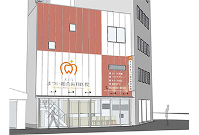
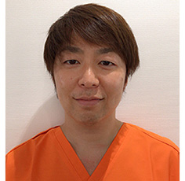

- ホーム
- 求人情報
天王寺まつい総合歯科の求人情報
＊－－【天王寺】今年１１月にオープン！－－＊
一緒にスタートを切ってくれる仲間を大募集！院長の地元でもある桃谷で､地域の方に寄り添った治療を提供する医院を目指します！実務未経験の方も､オープン前研修でしっかりと学んで成長できますよ｡【厚生年金あり】【有給休暇】【交通費全額支給】など､嬉しい待遇がしっかり｡みなさんの声を大切に医院を作り上げていきたいと思っています。
地域の方に寄り添う総合歯科

今年の秋､１１月にオープンを控える【天王寺まつい総合歯科】｡
ＪＲ｢桃谷｣駅から徒歩5分と好立地で大通り沿い､院長が生まれ育った馴染みのある土地でもあります｡
地元の方はもちろんのこと､遠方の方も通いやすく患者様に選ばれる歯科医院を目指しています｡患者様としっかりと向き合いながら歯の健康を守るパートナーとして二人三脚で治療を行うことを重視｡
長くお付き合いをしながら､患者様と信頼関係を築いていきたいと考えています｡
オープニングスタッフとして､一丸となって医院を作り上げていきましょう。
未経験からしっかり成長！
衛生士さんは､資格を取得したばかりで経験のない方､または経験の浅い方の応募も大歓迎｡
歯科助手･受付さんは､医療の知識がなくても始められる仕事なので､心配せずに挑戦してください｡
オープン前には､２週間ほど時間を取ってメンバーみんなで研修を行いますのでしっかり準備してからスタートできますよ。
ブランクのある方も､徐々に感覚を掴めます｡全員が初めて顔を合わせるメンバーなので､少しずつチームワークを育てていきましょう！経験や技術より､人物重視の採用です！
患者様や仲間を思いやれる方なら心配いりませんよ。
待遇もばっちり◎安心安定
経験のある歯科衛生士さんは､[社/契]月給26万円と好条件でスタート｡
もちろん､それぞれのスキルに応じてさらに高い金額でお迎えすることも可能です｡
また､当院ではそれぞれの頑張りをわかりやすくみなさんに還元したいため､固定の給与だけではなく
歩合給制度を給与に加算できるように導入｡物販や成約の獲得が給与にも反映されますよ！
[A/P]さんは週１日･１コマから勤務可能｡曜日や時間帯で時給がUPするので､効率よく働くことも可能ですよ。
他にも､【お休み充実】や【厚生年金あり】など長く安定して活躍できる待遇が揃っています。
みなさまに求めること
初めまして､院長の松井です！

医院のコンセプトは､【家族が安心して通える医院】｡
家族にも自信を持って薦められるような､信頼できる歯科医院を目指したいと思っています！桃谷は､私にとっても思い入れのある土地なのでこの地域の方に寄り添い､信頼関係を築きながら｢頼れる歯医者さん｣に成長していきたいと思います｡
プライベートでは､３歳･１歳の娘がおり朝の出勤前に娘たちと遊ぶのも日々の楽しみです｡｢仕事人間｣な一面もあるので､職場にいるときも楽しみながら働いています｡
これから仲間として､みなさんと一緒に医院を成長させていくのを楽しみにしています！
できたばかりの新しい医院
オープンに向けて､医院は着々とできあがってきています｡
歯科医院には珍しく３階建てで､吹き抜けになっており解放感のある気持ちの良い空間になる予定です｡
ワンフロアがスタッフルームになるので､休憩時間も気持ち良く過ごすことができますよ｡
まずは１階のみでチェア３台からスタートし､ゆくゆくは７台まで拡大していく予定です｡
キッズスペースの完備やユニバーサルデザインの採用でお子様からシニア層までが通いやすい医院を目指しています｡できたばかりの気持ちの良い空間で､活躍してください！
スキルUPもしっかり応援！
未経験の方の研修はもちろん､キャリアUPのためのスキル向上もしっかりサポートしていきます｡
院長は昔からSJDCという団体に所属し､別でMDAという勉強会を主催しており､教えるのは大得意｡日々の勉強会はもちろん､希望があればSJDCの衛生士部門の受講も可能です｡
また､当院は担当衛生士制を採用し､機材も最新のものを揃えています｡レベルの高い診療技術に触れながら､衛生士としてスキルUPできる環境ですよ｡
ゆくゆくは､海外研修などでみんなで技術向上を目指せたらと思っています｡
ぜひ当院で､成長しながら活躍してください。